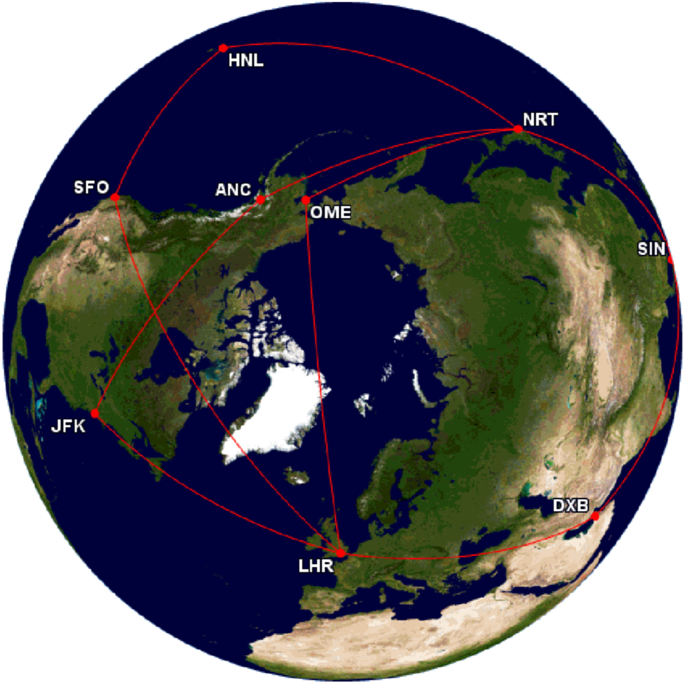

Table of contents: |
|---|
| Abstract |
| Introduction |
| Analysis and discussion |
| Conclusion |
| Figures and tables |
| References |
The travel boom of the 1960s presented an interesting dilemma to the aviation industry, whether the way forward was with supersonic aircraft (SST), or mainstream widebody airliners. The more glamorous and prestigious option would have been the former, with the more sensible option being the latter. As it turned out, the better option was the sensible one. At the present time, SST lies in limbo, with a lot of excitement for its return, but a lot of scepticism about how it will fare in modern society. With our current global economic and environmental problems, it seems likely that SST will remain a gimmick and will not be available for most travellers. The next generation of conventional widebody aircraft will also prove a challenge for SST. As the next generation Boeing 777X is introduced, it will prove a challenge for SST to compete with this, let alone beat the competition.
The sound barrier was first broken by the Bell X-1 in 1947, achieving a speed of Mach 1.06 (Smithsonian Institution, no date). Supersonic airliners first appeared in the 1960s, when demand for long-haul air travel skyrocketed and thus a new generation of long-haul aircraft was needed. Europe designed the high-speed/low-capacity BAC/Sud Aviation Concorde, and America the low-speed/high-capacity Boeing 747. Concorde was an excellent proof of concept, but was never as successful as the 747, and as a result only 20 were built compared to the over 1,500 747s (Airfleets.net, no date; Airfleets.net, no date). Concorde’s last flight was in 2003, but its replacement was unveiled just 11 years later, the Boom Overture (Mitchell, J, 2023). Overture is the successor to Concorde, with it already receiving orders from American, United, and Japan Airlines (Boom Supersonic, 2019).
In the 1960s, the travel boom resulted in air passenger numbers more than quadrupling (National Air and Space Museum, 2022). Airlines, manufacturers, and governments saw this boom on the horizon, and so the race to build the next generation of airliner began. Europe’s competitor, BAC/Sud Aviation’s Concorde, first flew in 1968, with America’s competitor, Boeing’s 747, taking off just a year later (Brooklands Museum, 2021; Museum of Flight, 2023). Concorde could take up to 120 passengers from London Heathrow (LHR) to John F. Kennedy International Airport (JFK) in under three hours, (BAE Systems, 2016; Winter 2024). Whereas the 747 had a capacity of up to 500 passengers, with a flight time of over seven hours (Airliners.net, 2016; Travelmath 2024). SST also faced difficulties with its noisy Rolls-Royce Olympus engines, measured at 119.4dB, just as loud as thunder (Thibault, 2019). As a result, it was originally banned completely from flying to America, but this was lifted after a successful lawsuit by Concorde’s operators. Concorde also flew to Sao Paulo and Bahrain, without much fuss, but expanded operations to Singapore were unprofitable and faced backlash from Malaysia and India (Joshi et al., 2021). Due to the poor efficiency and low capacity of supersonic airliners, the cash operating cost per available seat mile (COC/ASM) of Concorde was US$51.76, with that of the Overture estimated at US$41.98, and the widebody Boeing 777-300 at US$27.71 (Figure 1; Klingenberg et al., 2024). As a result, tickets for flights on Concorde were astronomical, with a round trip between LHR and JFK costing $12,500 in today’s money, with the current price for an economy class round-trip flight lying around the £400-£500 mark (Curran, 2020; Google Flights, 2024). It will be impossible to make SST affordable for ordinary travellers, but it may become alternative for business and first-class passengers, whom would have the cash to splash out on going supersonic. Boom estimates that tickets will be at around $5,000, but with current return business class tickets costing from $2400-$2700 this still seems like a steep increase just to save time (Perry, 2017; Flight Centre, 2024). Moreover, the most effective way to maximise profits with Overture would be through utilising a “follow the sun” strategy, the theory surrounding this being that westbound long-haul flights have higher demand than eastbound ones (Figure 2; Table 1; Klingenberg et al., 2024). Boom expects to produce 1,000-2,000 aircraft over a ten-year period of production but considering that only 130 firm orders have been placed, this estimate seems like a stretch (Perry, 2017; Boom Supersonic, 2024). Despite the optimism, it seems highly probable that supersonic travel will remain a luxury, enjoyed by the richest of society (Curran, 2020). The future of SST lies with the success of Boom’s Overture and will be dependent on how airlines want to market supersonic travel, and whether airlines will be able to successfully use a two-class configuration to get enough passengers to make it profitable, which may reduce the prices of these flights. The push to more environmentally friendly travel may also prove a hurdle for Overture, as despite that the aircraft is planned to run on 100% sustainable aviation fuel (SAF), it is still likely that Overture’s Symphony engines less efficient than General Electric’s GE90 engines of the 777-300. Boeing’s new 777X aircraft will use GE9X engines, which are 10% more efficient and 5% more powerful than the GE90. This may also reduce prices of subsonic business class tickets once it comes into service (Memon, 2023). Furthermore, the current economic and environmental circumstances will make it difficult for airlines to justify using such an uneconomical aircraft. SST could be a player in the private jet market though, as people who fly privately would be able to afford to fly on SST, with private flyers likely valuing the reduced flight times over the extra expense, although the persistent commercial sonic boom ban in the USA may also prove a tricky hurdle to overcome as well (NBAA – National Business Aviation Association, 2018).
In conclusion, it seems like SST will not play a significant role in the future of aviation, and it is more likely that airlines will buy it for the publicity and advertising value of having the aircraft in their fleet. The aviation industry has moved its focus to improving sustainability and affordability, and SST simply does not fit into that agenda, whereas the next generation Boeing 777X should fit this requirement with its improved efficiency and capacity meaning that it will become cheaper to operate, as well as reduce ticket costs, and SST simply cannot compete in these respects. It is possible that SST may become popular in private travel, as it offers a level of luxury that cannot be matched by any other business jets on the market, and private flyers will be able to afford the extra cost and would value the time that is saved by flying supersonic over the cost.
Figure 1: COC/ASM figures for various sub and supersonic aircraft.
Figure 2: A map displaying the possible routes of Overture from LHR.
Table 1: A table showing the potential routes and times of Overture from LHR.
| Rotation 1: | LHR-JFK | JFK-(AK)-NRT | NRT-(AK)-LHR | ||
|---|---|---|---|---|---|
| 09:00-08:00 | 09:00-08:30 | 17:30-20:00 | |||
| Rotation 2: | LHR-SFO | SFO-(HNL)-NRT | NRT-SIN | SIN-DXB | DXB-LHR |
| 09:00-09:00 | 10:00-11:00 | 12:00-15:00 | 16:00-18:30 | 20:00-21:00 |
The qudratic formula is given by: